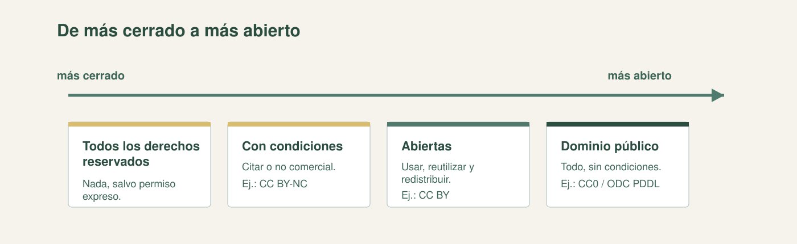
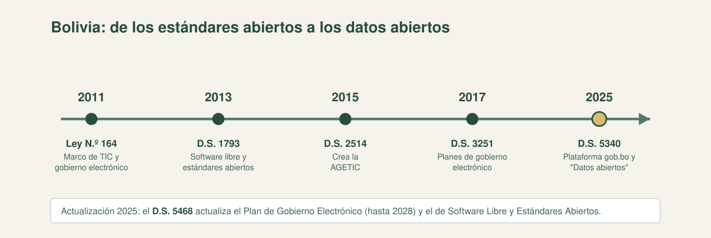
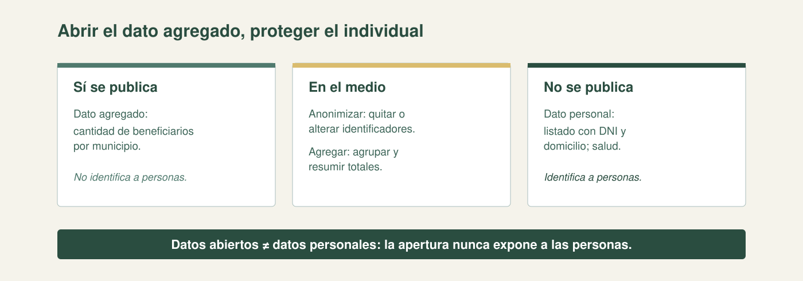

Transparencia
La ciudadanía puede verificar el uso de los recursos públicos.
Usar y reutilizar datos con reglas claras.
| Bloque | Tiempo | Qué haremos |
|---|---|---|
| Apertura y encuadre | 10 min | Bienvenida, Bloque 5 y las tres preguntas. |
| Licencias de datos | 25 min | Concepto, espectro y rol en la reutilización. |
| Licencias abiertas | 30 min | Creative Commons, Open Data Commons y "abierto". |
| Pausa | 10 min | Receso. |
| Datos abiertos: principios y beneficios | 20 min | El movimiento, sus principios, beneficios y portales. |
| Límites y protección de datos personales | 25 min | Datos personales, anonimización/agregación y protección en Bolivia. |
| Regulación en Bolivia | 15 min | Línea de tiempo e instrumentos. |
| Taller: leer y aplicar una licencia | 35 min | Actividad integrada con insumos y entregable. |
| Cierre y preguntas | 10 min | Síntesis y puente a la sesión 8. |
Saber responderlas es la base para compartir y reutilizar datos con seguridad, no un tema solo para abogados.
1. ¿Qué es una licencia de datos?
2. ¿Qué es un dato abierto?
3. ¿Qué dice Bolivia al respecto?
Un permiso formal que dice qué se puede y qué no se puede hacer con un conjunto de datos. Da certeza al autor y al usuario; sin licencia, el dato es jurídicamente ambiguo.
Otra entidad no sabe si puede redistribuirlo o armar un reporte con esos datos.
| Nivel | Qué permite | Ejemplo |
|---|---|---|
| Todos los derechos reservados | Nada, salvo permiso expreso. | Informe con © reservado. |
| Licencias con condiciones | Usar bajo reglas: citar, no comercial. | CC BY-NC. |
| Licencias abiertas | Usar, reutilizar y redistribuir. | CC BY. |
| Dominio público | Todo, sin condiciones. | CC0 / ODC PDDL. |

CC0 renuncia a todos los derechos: dominio público, sin permiso ni cita. CC BY permite cualquier uso con una sola condición: atribuir.
"Compartir igual" o "no comercial" dejan a la licencia fuera de la definición estricta de abierto.
| Licencia | Condición | Equivalente CC |
|---|---|---|
| ODC PDDL | Dominio público, sin condiciones. | CC0. |
| ODC-By | Atribución obligatoria. | CC BY. |
| ODC ODbL | Atribución + compartir igual. | CC BY-SA. |
Un dato es abierto si cualquiera puede usarlo, reutilizarlo y redistribuirlo. A lo sumo se aceptan dos condiciones: atribución y compartir igual.
Un dato puede verse sin costo pero estar prohibido de redistribuir. "No comercial" o "solo educativo" no son abiertos.
| Principio | Qué significa |
|---|---|
| Abiertos por defecto | Publicar salvo que exista una razón fundada para no hacerlo. |
| Oportunos y completos | Datos actualizados y sin recortes arbitrarios. |
| Accesibles y usables | Formatos legibles por máquina, no solo PDF o imágenes. |
| Interoperables y comparables | Estándares comunes para cruzar datos entre instituciones. |
| Para la mejora y la innovación | Orientados a que otros los reutilicen. |
La ciudadanía puede verificar el uso de los recursos públicos.
Universidades, empresas y periodistas construyen servicios y análisis.
Surgen aplicaciones y emprendimientos; la prensa vigila la gestión.
Portales bolivianos: datos.gob.bo y gob.bo (sección "Datos abiertos del Estado").
Cantidad de beneficiarios de un programa por municipio. Es un dato agregado que no identifica a personas.
El listado con DNI y domicilio de esos beneficiarios. La apertura nunca implica exponer datos personales.
La CPE art. 21.2 protege la intimidad, privacidad, honor e imagen; el art. 130–131 establece la acción de protección de la privacidad (ex hábeas data).
Bolivia no cuenta todavía con una ley integral de datos personales: la protección vigente es constitucional.
Hay un proyecto de ley de acceso a la información (remitido a Diputados en 2026) y un anteproyecto de AGETIC.
| Año | Norma | Aporte |
|---|---|---|
| 2011 | Ley N.º 164 | Ley marco de TIC y gobierno electrónico. |
| 2013 | D.S. 1793 | Gobierno electrónico, software libre y estándares abiertos. |
| 2015 | D.S. 2514 | Crea la AGETIC. |
| 2017 | D.S. 3251 | Planes de implementación de gobierno electrónico. |
| 2025 | D.S. 5340 | Plataforma gob.bo y "Datos abiertos del Estado". |

Guías técnicas del órgano rector para publicar datos con estándares, metadatos y licencias adecuadas.
Licencia Pública General de Bolivia, de software libre: asegura liberar y reutilizar el software del Estado.
El D.S. 5468 actualiza el Plan de Gobierno Electrónico (hasta 2028) y el de Software Libre y Estándares Abiertos.
En equipos de 3–4, revisen el texto de una licencia: CC0, CC BY u ODC-By.
¿Qué se puede hacer? ¿Qué condición hay que cumplir? ¿Qué licencia le pondrían a un dato público?
¿Qué datos NO publicarían para proteger datos personales? Justifiquen con anonimización.
Insumos: dataset AGETIC (CC-BY) + los tres textos de licencia. Entregable: la ficha de decisión.

1) qué permite la licencia · 2) qué condición exige · 3) qué licencia pondrían a su dataset y por qué · 4) qué datos no publicarían · 5) atribución lista para pegar.
Cada equipo comparte su licencia elegida y un dato que decidió no publicar.
¿Por qué esa licencia? ¿Cómo cumplen la atribución? ¿Qué dato protegieron?
Comparen las licencias elegidas y los criterios de privacidad.
Publicar no alcanza: hay que publicar con licencia clara, abierta y privacidad protegida.
Sin permiso formal no hay reutilización segura; la licencia da certeza al autor y al usuario.
Usar, reutilizar y redistribuir con, a lo sumo, atribución y compartir igual.
Abrir el dato agregado y proteger el dato personal: la apertura no se opone a la privacidad.
Próxima sesión: la inteligencia artificial, su historia y las redes neuronales.
Bloque 5 · Sesión 7 · Licencias y datos abiertos
Licencia clara + abierto + privacidad protegida.